설계 원칙
클래스 없음
장비와 경험이 곧 특기. 레벨도 없다.픽션 우선
주사위보다 세계 속 요소로 성패를 판정한다. 영리한 아이디어는 굴림 없이 통한다.죽음은 가깝다
그러나 무작위·무경고 죽음은 없다. 위험 정보는 넉넉히 준다.싸움은 선택
대개 현명하지 않다. 정찰·대화·꾀로 피하는 게 생존법.캐릭터 만들기
20종 중 하나. 이름·시작 장비·d6 표 2개
STR·DEX·WIL 각 3d6, 두 개 맞바꾸기 가능
체력이 아닌 '피하는 힘'
외모·성격 d10×8, 본드 d20
2d20+10, 가장 어린 PC 가 오멘 d20
세 능력치
배경 20종
1 Aurifex(연금술) · 2 Barber-Surgeon(이발외과의) · 3 Beast Handler(짐승 조련) · 4 Bonekeeper(장의사) · 5 Cutpurse(소매치기) · 6 Fieldwarden(밭지기) · 7 Fletchwind(궁수) · 8 Foundling(주워진 아이) · 9 Fungal Forager(버섯 채집) · 10 Greenwise(숲 학자) · 11 Half Witch · 12 Hexenbane(마녀 사냥) · 13 Jongleur(광대) · 14 Kettlewright(땜장이) · 15 Marchguard(국경 경비) · 16 Mountebank(약장수) · 17 Outrider(호위 기수) · 18 Prowler(숲 안내) · 19 Rill Runner(뱃사공) · 20 Scrivener(서기 학자)
인벤토리 — 10칸
칸 세기
- 보통 아이템 = 1칸
- petty(자잘한 것) = 0칸
- bulky(부피 큼) = 2칸
- 100gp 미만 동전 = petty
- 피로(Fatigue) 도 1칸 차지
한계
- 맨몸으론 4칸만 편히, 배낭(+6) 기본 지급
- 10칸 가득 = HP 0 (즉사는 아님, 다음 피해부터 STR 로)
- 10칸 넘게는 못 든다. 피로가 들어올 칸이 없으면 아이템을 버린다
세이브
d20 ≤ 능력치 이면 성공. 1 은 늘 성공, 20 은 늘 실패. 맞대결·공동 행동은 가장 위험한 쪽(보통 낮은 능력치)이 굴린다.
굴려 보기
반응 2d6 (NPC 태도가 애매할 때)
| 2 | 3–5 | 6–8 | 9–11 | 12 |
|---|---|---|---|---|
| 적대 | 경계 | 호기심 | 친절 | 도움 |
운명의 주사위 d6
불확실할 때 워든이 굴린다. 4+ PC 유리, 3- 불리.
사기 (Morale)
적은 첫 사상자 · 절반 손실 때 WIL 세이브, 실패 시 도주. 단독 적은 HP 0 일 때. PC 는 해당 없음.
피해 · 회복
피해 − 갑옷
HP 0 아래로 내려간 양
깎인 새 STR 로
기어갈 뿐, 1시간 내 치료 못 받으면 사망
피해 계산 해 보기
회복
- 잠깐 쉬며 물 마시기 → HP 전부 (노출 위험)
- 능력치 손실 → 치료자와 1주 휴식
- 붕대 → 치명 피해 안정
결핍 · 피로
- 결핍: 음식·잠 등 결여. 하루 넘으면 매일 피로 1. 결핍 중엔 회복 불가
- 피로: 1칸 차지. 안전한 곳 하룻밤 휴식으로 해소
전투 밖 피해
함정 · 폭발 · 낙하 등은 HP 를 건너뛰고 능력치(주로 STR) 로 바로 들어온다.전투
라운드 (≈10초)
- PC 먼저, 적 나중. 각 편 결과는 동시
- 첫 라운드: PC 각자 DEX 세이브, 실패하면 그 라운드 행동 불가
- 차례마다 40ft 이동 + 행동 1
공격
- 자동 명중. 무기 주사위 − 갑옷
- 여럿이 한 대상 → 다 굴려 최고값 하나
- 쌍수 d8+d8 → 둘 중 높은 값
- 갑옷 최대 3
수정치
- 약화: 불리한 위치 → 무조건 d4 (맨손도 d4)
- 강화: 유리한 위치 → d12
- 폭발: 범위 내 전원 각자 굴림
기타
- 후퇴: DEX 세이브 + 안전한 도착지
- 분대: 다수 동종 적 = 한 덩어리. 개인→분대 약화, 분대→개인 강화+폭발
- 원거리: 눈 흰자 보일 거리. 탄약 추적 안 함
상흔 — HP 가 정확히 0 이 되면
잃은 HP 양으로 표를 본다. 상처를 입지만 최대 HP · 능력치를 다시 굴려 높으면 갱신 — Cairn 의 성장 수단.
| 잃은 HP | 결과 | 잃은 HP | 결과 |
|---|---|---|---|
| 1 | 흉터 — 1d6 이 최대 HP 보다 크면 갱신 | 7 | 힘줄 끊김 — 회복 후 3d6 > 최대 DEX 면 갱신 |
| 2 | 휘청 — 1d6 > 최대 HP 면 갱신 | 8 | 귀먹음 — WIL 세이브 성공 시 최대 WIL +1d4 |
| 3 | 나가떨어짐 — 결핍, 쉬고 나면 최대 HP +1d6 | 9 | 정신 흔들림 — 3d6 > 최대 WIL 면 갱신 |
| 4 | 골절 — 회복 후 2d6 > 최대 HP 면 갱신 | 10 | 신체 절단 — WIL 세이브 성공 시 최대 WIL +1d6 |
| 5 | 감염 — 낫고 나면 2d6 > 최대 HP 면 갱신 | 11 | 치명상 — 1시간 내 치료, 회복 후 최대 HP = 2d6 |
| 6 | 머리 부상 — 무작위 능력치 3d6 > 현재면 갱신 | 12 | 저승 문턱 — 다음 치명 피해 세이브 실패 시 사망 |
마법
주문서
주문 1개 · 1칸. 두 손으로 들고 소리 내어 읽으면 시전 → 피로 1. 결핍·위험 중엔 WIL 세이브. 시간·안전이 있으면 강화 무료.두루마리
petty · 피로 없음 · 1회용.유물 (Relic)
피로 없음. 충전 횟수 + 재충전 조건.던전 탐험
주변 · 즉각 위험
이동 · 행동
애매하면 운명 주사위
자원 · 상태, 필요하면 사건 굴림
턴마다 40ft(횃불 반경) 이동 + 행동 1. 행동으로 3배 이동 가능하지만 사건 확률이 오른다.
던전 사건 d6 — 이럴 때 굴린다
한 곳에서 1사이클 넘게 머묾 · 서둘러 이동 · 새 구역 진입 · 큰 소음
| 1 | 2 | 3 | 4 | 5 | 6 |
|---|---|---|---|---|---|
| 조우 (반응 굴림) | 흔적 | 환경 변화 | 상실 (횃불 꺼짐 등) | 지침 (휴식/피로/식량) | 고요 |
수색
1턴에 대상 하나를 철저히 → 숨은 보물 · 함정 · 비밀문. 안전하지만 시간이 든다.휴식
1턴 → HP 전부. 광원 + 안전 필요. 던전에선 피로를 못 푼다.공포 (Panic)
포위 · 어둠 · 최대 공포 → WIL 세이브. 실패 시 HP 0, 첫 라운드 행동 불가, 공격 약화. 행동으로 WIL 세이브해 벗어난다.광원
횃불 40ft, 3번 켜면 끝. 랜턴은 기름(6회). 광원 없으면 공포.함정
조심하는 캐릭터에겐 정보를 다 준다. 무심하면 픽션대로 또는 2-in-6. 피해는 능력치로.문
잠김 · 끼임 · 막힘. 행진 순서가 누가 먼저 맞을지 정한다. 듣고 냄새 맡아 너머를 살필 수 있다.야외 탐험
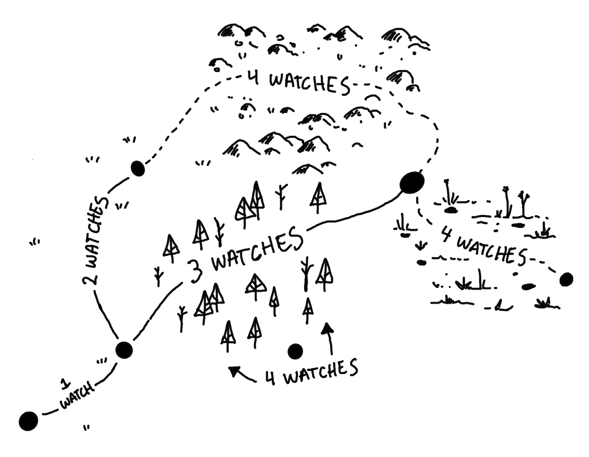
- 하루 = 3 경계 (아침 · 오후 · 밤). 경계마다 1인 1 야외 행동.
- 거리 = 길 + 거리 + 지형 + 날씨 페널티 합.
| 길 | 거리 | 지형 | 날씨 |
|---|---|---|---|
| 도로 0 오솔길 +1 (길잃음 2-in-6) 황야 +2 (3-in-6) |
짧음 +1 중간 +2 김 +3 |
쉬움 0 (평야) 험함 +1 (숲·언덕) 위험 +2 (산·늪) |
좋음·무난 0 불쾌: 피로 or +1 악천후: + 지형↑ 극한: 피로 and +1, 지형↑ 재앙: 이동 불가 |
야외 행동
- 이동: d6 길잃음 판정
- 탐색: 장소·지형지물 발견
- 보급: 식량 1d4, 인원마다 한 단계↑ (최대 d12)
- 야영: 식량 1, 피로 전부 해소
야외 사건 d6
1 조우 · 2 흔적 · 3 환경 · 4 상실 · 5 지침 · 6 발견밤 이동은 두 번 굴린다. 야영을 건너뛰면 피로 + 결핍 + 지형 한 단계↑.
휴지기 (세션 사이)
PC 마다 행동 1. 워든이 마일스톤 1–5 와 비용(금 · 자원 · 평판 · 상실)을 정한다. WIL 세이브로 비용 감면을 노릴 수 있다.
연구
분명한 질문 + 지식의 출처.훈련
개선할 기술 + 가르칠 스승.관계 강화
NPC·세력 + 구체적 의도.세계 — 발드 (Vald)
도시들
권력의 중심. 모험은 주로 작은 마을 · 숲 · 변방에서 벌어진다.숲 (the Wood)
모든 숲. 중심엔 심장나무. 고블린 · 정령 · 트롤 · 마녀, 그리고 모두가 경외하는 요정(Fae).뿌리 (the Roots)
거대한 지하 세계. 입구는 관문(Gate). 유물 · 부 · 지식, 그리고 공포.CAS-2 · Yochai Gal (2026) · 입문용 모험. 치명적이지만 비판적 사고와 신중한 탐험으로 살아남을 수 있다.
의뢰
사라진 조사단
3주 전 아홉의 결사가 실버실크 강가에서 새로 발견된 동굴로 학자들을 보냈다. 대표는 하이 렉터 게텔리. 그 뒤로 소식이 없다.보상
- 초승달 모양 유물 진흙 체 회수 — 1000gp
- 조사단원 4명 중 한 명을 산 채로 데려올 때마다 — 100gp
시작
배로 강을 따라 내려와 야영지 서쪽에 닿는다. 도착 시각과 원하는 날씨를 정한 뒤 워든이 운명 주사위를 굴려 반영한다.배경
워든 전용 — 배경 펼치기 (원문 p.3 Warden Information)
아홉의 결사
상인 · 학자 · 권력자의 연합. 막대한 부와 첩보망. 관문(Gate)의 발견과 규제가 목적. 유물과 뿌리 정보에 큰돈을 낸다.조사단 4명
- 게텔리 — 서기 학자. 평소에도 거만함
- 헬-프리스 — 동굴 경험으로 고용된 현지인
- 파라즈 — 서기 학자, 유물 전문가, 결사원
- 오렌 — 숲 안내꾼, 경호원
실버실크 강
도시들의 수원. '손가락'이라는 좁은 협곡을 흐른다. 최근 수위가 크게 줄어 푸른 테두리의 큰 동굴이 드러났다.뿌리 (the Roots)
옛 세계의 잔재. 도시 하수도에서 먼 폐허까지 이어진 끝없는 미로. 입구(관문)는 지켜지거나 교묘히 숨겨져 있다.던전 개요 — 푸른 입 동굴
- 입구: 바위 턱 아래 야영지(C1) · 그 아래쪽 동굴 입구(C2, C1 에선 안 보임).
- 빛: 동굴 안엔 자연광도 인공광도 없다.
- 메탄: 어딘가에 가스 분출구. 인화성. 냄새는 없지만 불꽃이 떨리며 파래진다. 오래 마시면 두통 · 메스꺼움(결핍).
지도
워든 전용 — 지도 펼치기
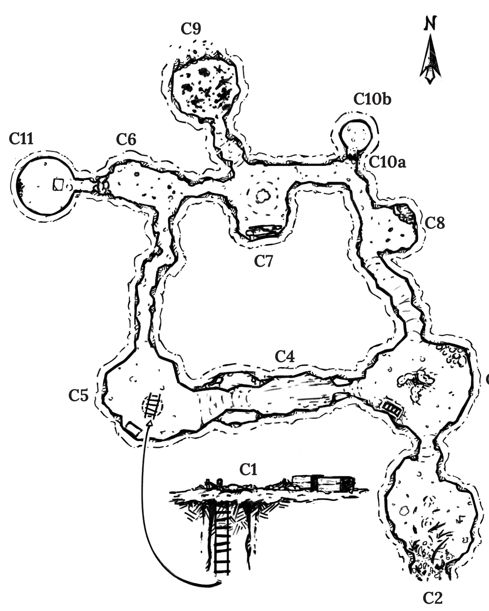
방 C1–C11
워든 전용 — 방별 내용 펼치기
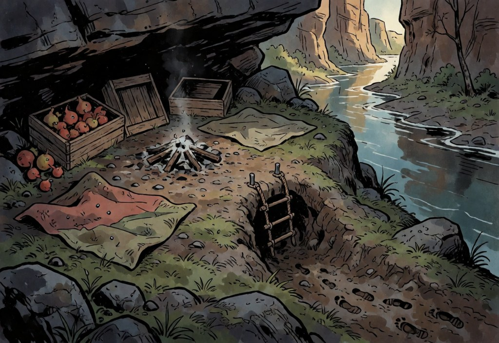
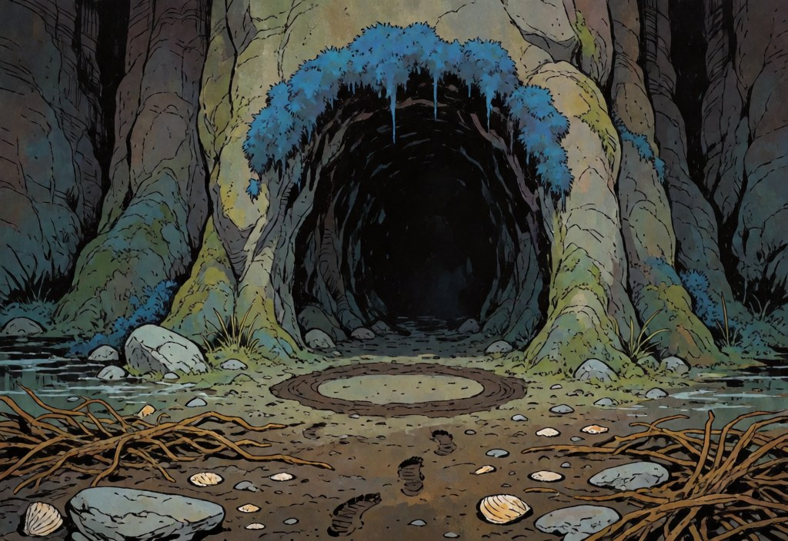
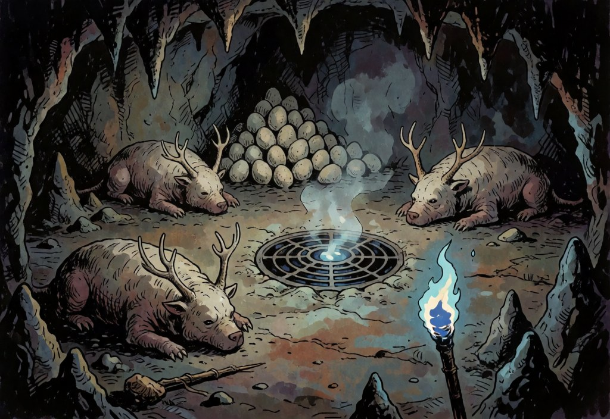
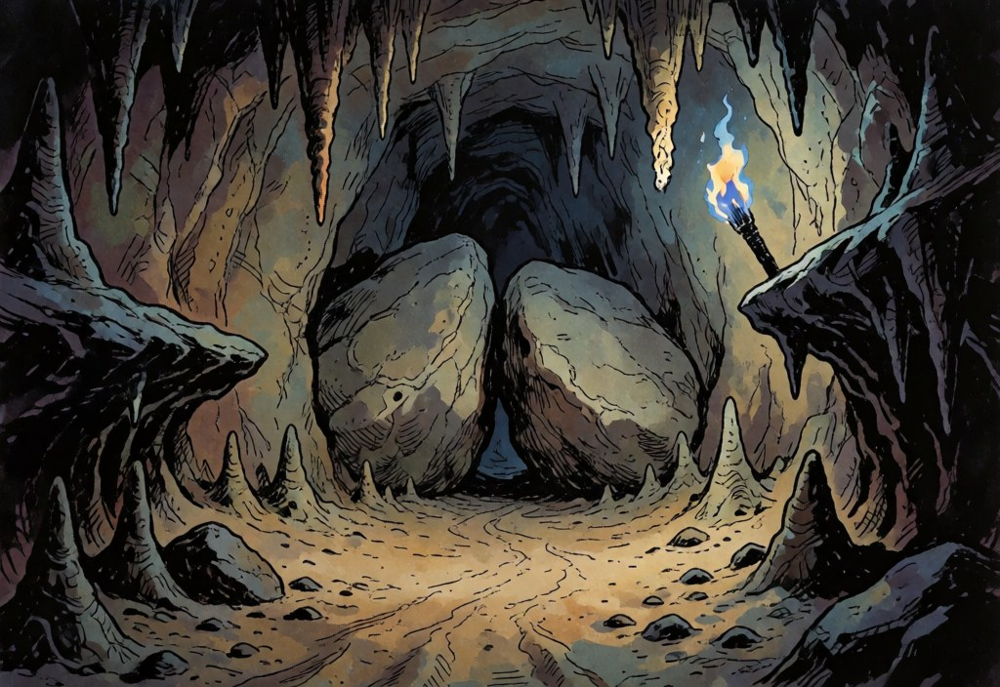
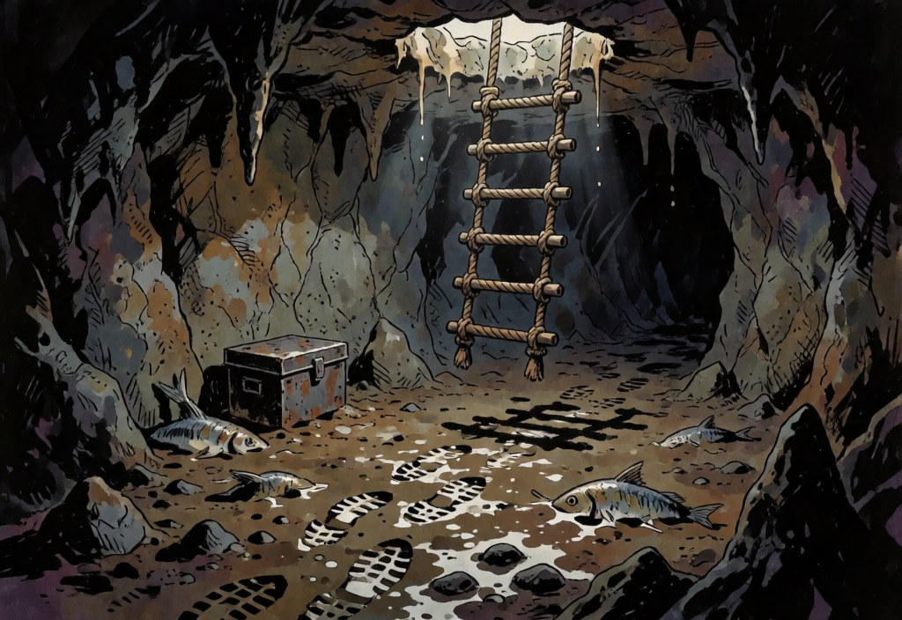
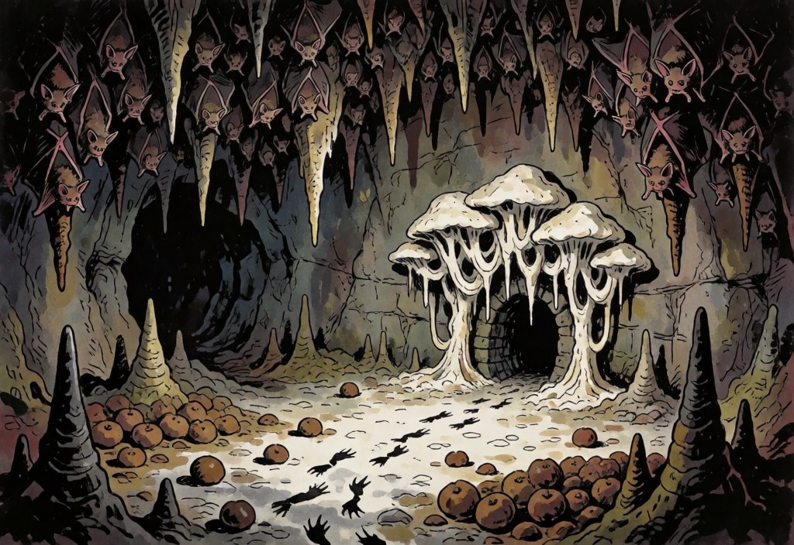
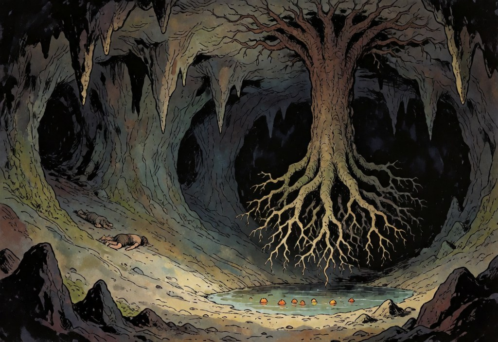
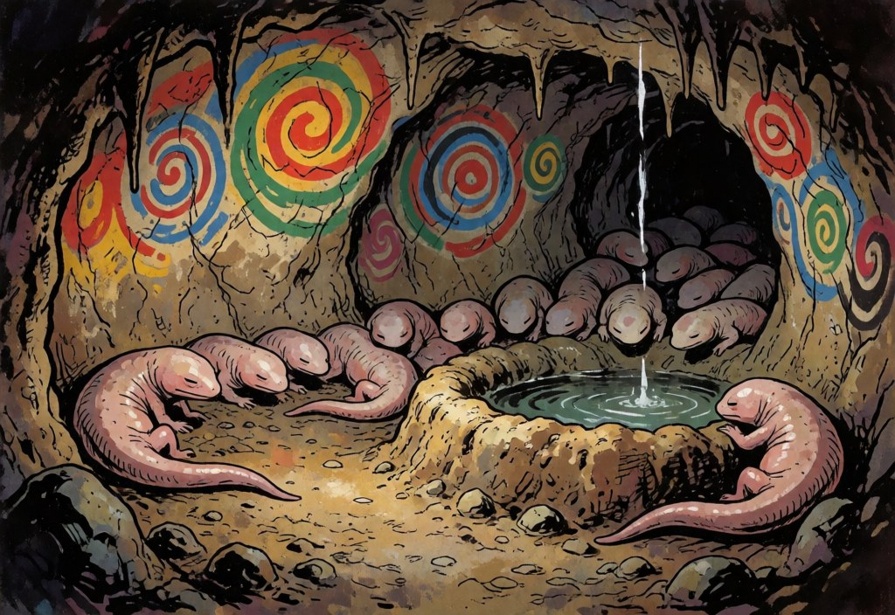
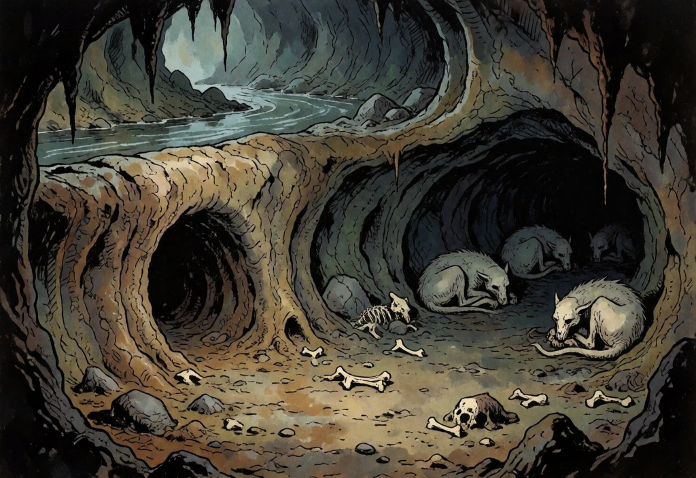
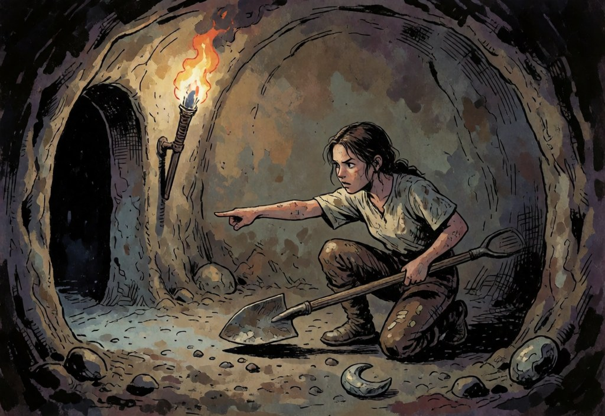
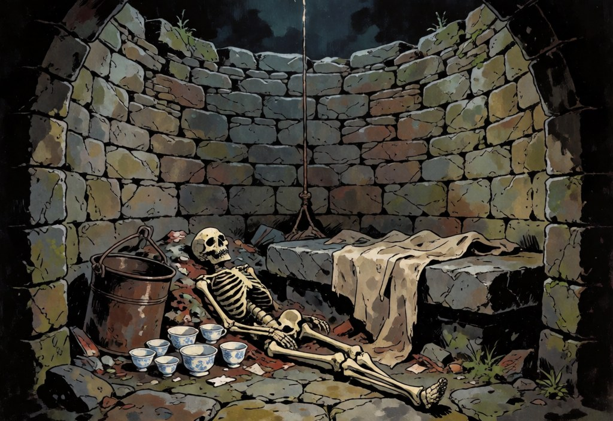
| 방 | 이름 | 핵심 |
|---|---|---|
| C1 | 야영지 | 썩은 냄새(열매 상자). 상자: 녹슨 도구 1d6 + 곡괭이(d6) / 열매(하나만 멀쩡). 모닥불 1주 이상 식음. 굴 + 줄사다리 12ft → C5. 담요 4장(작은 것 = 헬-프리스). 동쪽 C2 로 발자국. |
| C2 | 동굴 입구 | 푸른 이끼(한 줌 10gp). C3 가스 소리 희미. 옛 물속 흔적. 불꽃이 파래지기 시작. |
| C3 | 튜브웜 둥지 | 숨 막힘. 웜 시체 3(물린 자국). 알 d6(물에 두면 부화). 뜨거운 분출구. 불 들고 들어가면 폭발: 근처 전원 d6 STR, 광원 파괴. 분출구를 덮으면 1d4시간 뒤 숨쉴 만함. 가스는 C4 로 올라감. |
| C4 | 매복 방 | 좁은 복도, 높은 천장. 끌어다 놓은 바위 둘 사이 좁은 길. 첫 통과자: 게텔리가 위 턱에서 종유석을 떨굼 (DEX 세이브 실패 시 d8 STR). 북쪽 턱 2(쉬움) · 남쪽 턱 1(천장 근처). 낮은 턱에 사람 발자국. |
| C5 | 사다리 방 | 천장 구멍 줄사다리(→C1). 철 상자: 쇠못 2 + 건조 식량(2회). 죽은 물고기. 구아노 묻은 흰 발자국. |
| C6 | 박쥐 방 | 악취. 박쥐 수백(C7 에서 피신). 물갈퀴 발자국(추적 불가). 서쪽 벽 흰 곰팡이(먹으면 독) 뒤 기어가는 굴 → C11. |
| C7 | 아트리움 | 거꾸로 매달린 붉은 은자 나무, 물 부족으로 죽어감. 작은 웅덩이(보급 한 번). 시체 = 파라즈 · 오렌. 오렌: 단검(d6) · 횃불(1회) · 47gp. 파라즈: 나침반(55gp) · 무딘 삽(d6). C9 댐을 부수면 물 복구 → 나무 · 올름 생존, 박쥐 귀환. |
| C8 | 올름 굴 | 따뜻 · 비좁음. 올름 10–14, 병듦. PC 무시(신선한 열매 냄새엔 반응). 벽화: 산에서 내려옴 → 열매 나무 발견 → 튜브웜을 먹은 올름이 쫓겨남. 샘(진흙 벽): 부수면 C8·C3·C2 침수, 부분 회복. C7 물 없인 올름은 결국 죽음. |
| C9 | 블러드 올름 소굴 | 시체 · 참상. 블러드 올름 최대 3. 북쪽 댐(진흙 체로 만듦) — 손상 시 1d4분 뒤 터져 침수(DEX 세이브로 헤엄쳐 탈출). C1 로 들어왔거나 시끄러우면 깨어 경계, C2 로 조심히 오면 잠듦. 댐 건드리면 공격. |
| C10a | 봉쇄 | 바닥~천장 진흙 벽. 손으로 1시간, 도구로 몇 분. 흰 발자국이 벽 앞에서 끊김. 크게 말하면 C10b 가 웅얼거리며 응답. |
| C10b | 피난처 | 헬-프리스: 삽을 겨눔, 다른 손에 진흙 체(충전 1). 괴물이 횃불을 끄고 습격 → 게텔리와 올름 굴에 숨음 → 게텔리가 덤빔 → 진흙 체로 벽을 쌓고 숨음. 안전하다 느껴야 진흙 체를 넘김. |
| C11 | 우물 | 마른 우물 바닥, 위로 80ft. 도자기 잔 세트(150gp, 깨지기 쉬움) · 사람 해골(루살 것, 만지면 저주). 박쥐가 C6 에 있는 동안 루살이 여기 산다. |
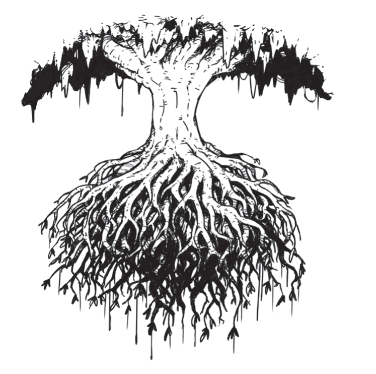
NPC · 적
워든 전용 — 그림 · 능력치 · 루살 은혜 펼치기
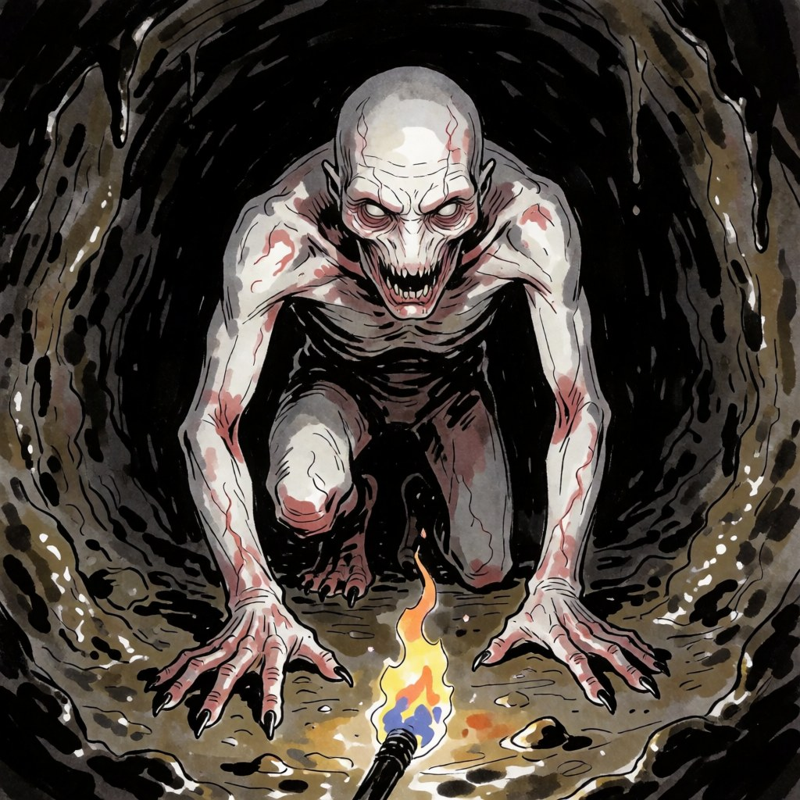
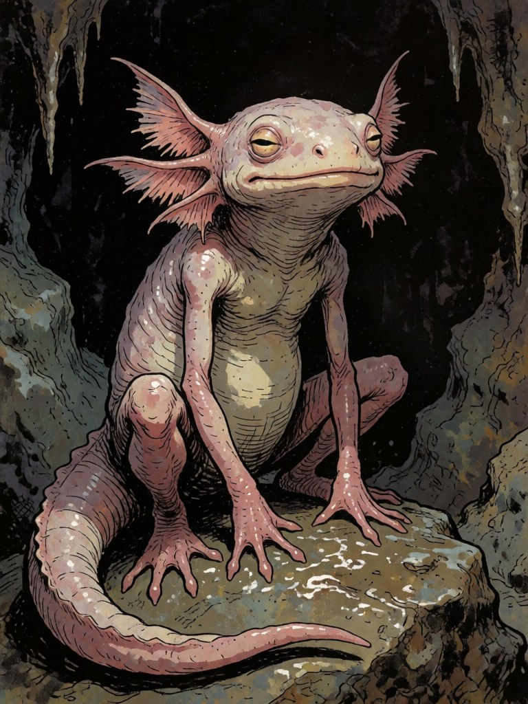
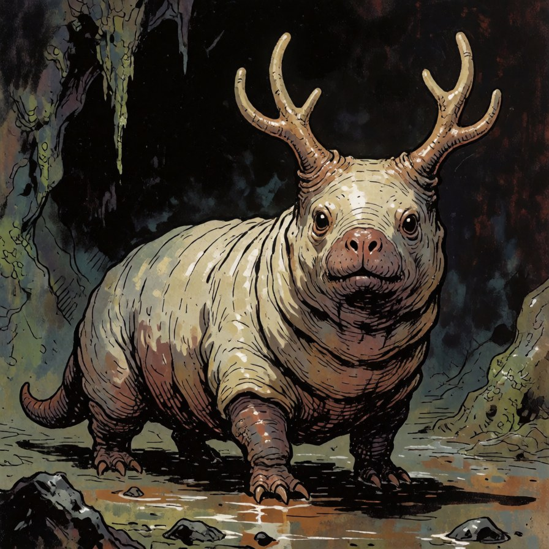
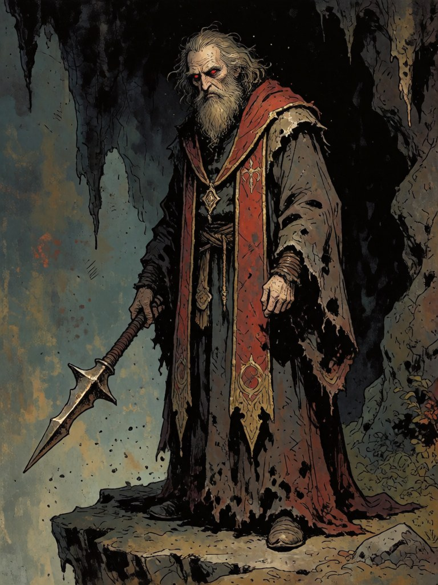
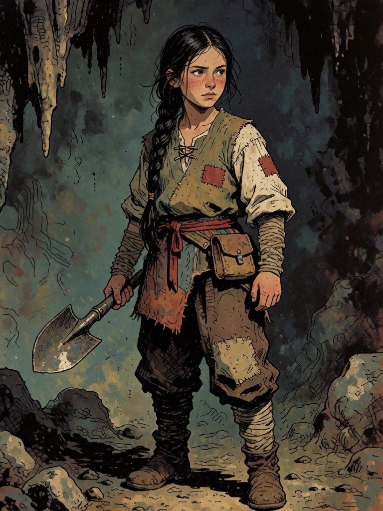
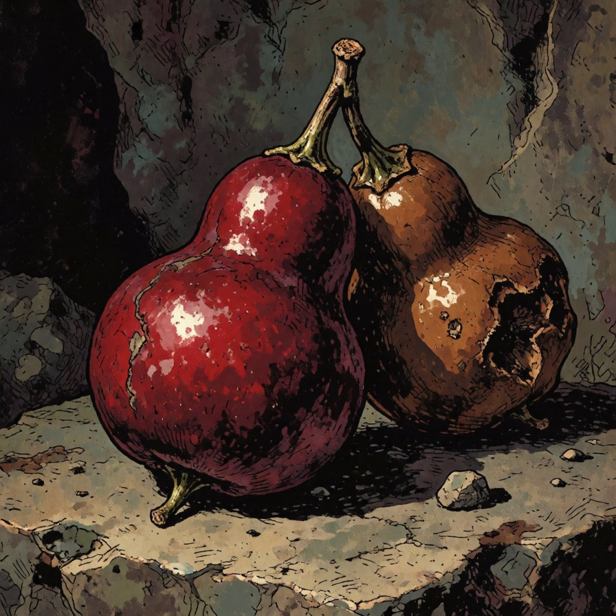
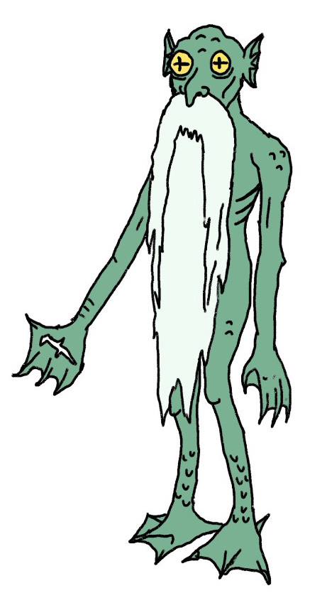
| 이름 | HP | STR | DEX | WIL | 공격 | 특징 |
|---|---|---|---|---|---|---|
| 블러드 올름 | 8 | 14 | 11 | 4 | 발톱 d8+d8 | 열 감지 사냥, 동족 포식. 메탄을 피함, 불꽃을 끄려 함. 붉은 은자 열매에 쫓김. 치명 피해 시 살점을 물어뜯음 d6 STR. |
| 올름 | 2 | 8 | 6 | 12 | 발톱 d8+d8 | 채식. 자기 방어만. 말 못 하나 지능 높음. |
| 헬-프리스 | 2 | 8 | 14 | 11 | 삽 d6 | 15세 현지 동굴 잠수꾼. 진흙 체 소지. |
| 하이 렉터 게텔리 | 6 | 11 | 15 | 17 | 갈아 세운 쇠못 d6 | 튜브웜을 먹고 미침, 눈이 진홍. 진흙 체 사용법 두루마리. 동굴을 떠나지 않으려 하고, 산 것을 보면 죽이려 함. 도시의 전문 치료로만 회복. |
루살
- 박쥐에게 옛 집(C6)을 뺏겨 우물(C11)로 옮김. 블러드 올름엔 손대지 않음 — "이제 새 균형의 일부지."
- 박쥐가 C7 로 돌아가면 PC 한 명에게 은혜 d6.
- 그 밖엔 거래. 값은 추상적인 것(목소리 · 고향의 기억 · 야망 · 웃음…). 거래 속의 거래를 사랑함.
- 보통 수단으론 해칠 수 없음. 담배 · 향 연기를 싫어해 달아남. 음악과 춤을 좋아함.
| d6 | 은혜 |
|---|---|
| 1 | 물속 호흡. 물에 오래 있을수록 돌아가야만 하게 됨. |
| 2 | 병 · 질환 치료. STR 또는 DEX 를 다시 굴려 그 값으로. |
| 3 | 위대한 예술가급 재능. 단, 아무 기쁨도 주지 않음. |
| 4 | 무작위 주문서를 머리에 새김 (WIL 1d4 잃음, 책은 사라짐). |
| 5 | 어떤 문이든 한 번 여는 열쇠. 물고기 뼈 모양 (petty). |
| 6 | 강력한 비밀 하나의 진실. 본인만 들음. |
유물 — 진흙 체 (Mud Sieve)
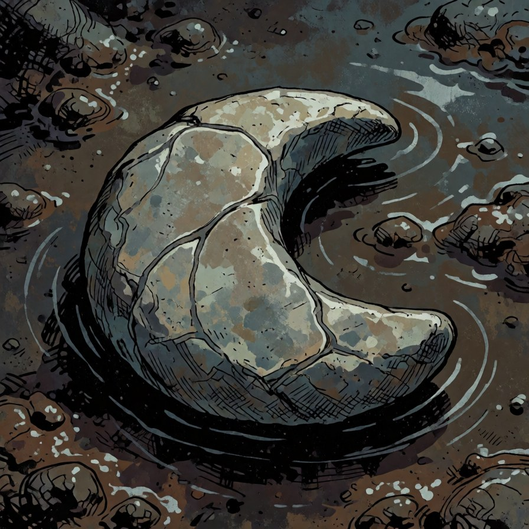
재충전: 거센 강물에 하룻밤과 하루를 두었다가 건져 낸다.
진상
워든 전용 — 무슨 일이 있었나 · 해결 갈래 펼치기
- 조사단이 붉은 은자 나무와 그 열매의 치유력(신선하면 STR 1 회복 + 결핍 해소, 하루 1회)을 발견.
- 수확하려고 진흙 체로 C9 에서 강을 막음 → 나무에 물이 끊기고 열매도 끊김.
- 박쥐는 C7 → C6 로 피신. 굶주린 올름 일부가 튜브웜 고기를 먹고 육식 광기 → 블러드 올름.
- 게텔리도 튜브웜을 먹고 미침. 파라즈 · 오렌은 블러드 올름에게 죽음. 헬-프리스는 C10b 에 숨음.
목표
진흙 체(1000gp) + 생존자 헬-프리스 · 게텔리(각 100gp).완전 복구
C9 댐 파괴 → 나무 · 올름 · 박쥐 귀환 → 루살 은혜. 블러드 올름이 막는다.부분 복구
C8 샘 벽 파괴 → 침수. 그러나 올름은 결국 죽는다.위협
C3 메탄 폭발 · C4 종유석 매복 · 블러드 올름(불을 끄고 습격) · 게텔리.도구
붉은 은자 열매(블러드 올름 퇴치) · 진흙 체 · 곡괭이 · 쇠못 · 담배/향(루살).워든 원칙 (이 모듈)
- 방을 묘사할 때 곧 벌어질 일을 다시 말한다. 저 불붙은 통은 멀쩡해 보이나, 터질 것 같나?
- 위치와 감각을 계속 다시 짚는다. 위험까지 얼마나 가까운가? 물체의 어느 쪽에 서 있나?
- 다음 통로를 미리 귀띔한다 — 높낮이 · 온도 · 빛 · 냄새 · 소리.
- 감정을 말하지 않는다. "사악해 보이는 칼"보다 "길고 들쭉날쭉한 칼".
- PC 가 죽으면 개연성보다 빨리 새 캐릭터를 합류시키는 게 먼저.